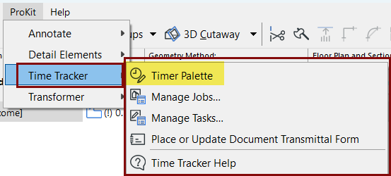
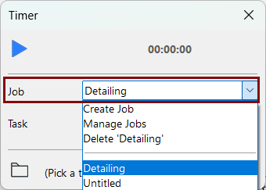
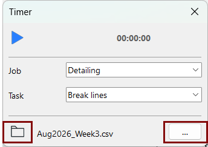
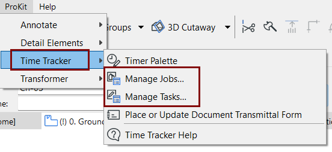
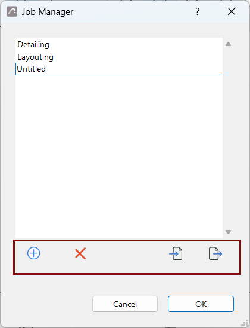

01
1. Timer 面板：按 Job / Task 记录工时到 CSV
1. Timer Palette: Log Time per Job and Task to CSV
入口：ProKit > Time Tracker > Timer Palette。工时按 Job（项目 / 工作）与可选的 Task（任务）两级记录。

Time Tracker 菜单" loading="lazy">第一次使用
- 在 Timer 面板选择已有 Job，或用 Create Job 新建。
- 可选：选择或新建 Task；也可用 Manage Jobs / Manage Tasks 统一管理。
- 点文件夹图标旁的 … 选择工时表保存位置并命名，文件会随计时开始 / 停止持续更新。
- 点开始计时，再点一次停止。
- 工时表就是保存下来的
.csv文件，用表格软件打开即可。


Open at ProKit > Time Tracker > Timer Palette. Time is logged by Job, with an optional Task.
First run
- Select an existing Job in the Timer palette, or create one with Create Job.
- Optionally select or create a Task; Manage Jobs and Manage Tasks handle both.
- Click … next to the folder icon, choose where to save the timesheet and name it. The file updates continuously.
- Start the clock; click again to stop.
- The timesheet is the saved
.csvfile, ready to open in a spreadsheet.
02
2. 管理 Jobs 与 Tasks：导入导出与批量维护
2. Manage Jobs and Tasks: Import, Export, Maintain
ProKit > Time Tracker 下有 Manage Jobs 与 Manage Tasks 两个对话框，列出项目现有的 Job / Task。
- 在两个对话框里可以新增、删除、导入、导出。
- Job 文件扩展名
.jobs，Task 文件扩展名.tasks。 - 数据随项目保存，换项目时可导出复用。


ProKit > Time Tracker provides Manage Jobs and Manage Tasks, listing the project's existing Jobs and Tasks.
- Both dialogs support add, delete, import and export.
- Job files use
.jobs; task files use.tasks. - Data is stored with the project and can be exported for reuse.
03
3. 配套图库对象：甘特图与文件传送单
3. Library Objects: Gantt Charts and Transmittal Forms
Time Tracker 的图库包提供项目跟踪相关对象：甘特图、文件传送单（Transmittal Form）等。
- ProKit Document Transmittal Form.gsm：内容来自已关闭的 Transmittal Sets；用 ProKit > Time Tracker > Place or Update Document Transmittal Form 放置或更新。
- Gantt Chart #NNNN.gsm / Gantt Chart Shared #NNNN.gsm：甘特图对象。
- ProKit Gantt Chart.gsm、ProKit Project Info Table.gsm：项目信息与进度表。
The Time Tracker libpack provides project-tracking objects such as Gantt charts and a Transmittal Form.
- ProKit Document Transmittal Form.gsm draws data from closed Transmittal Sets; place or update it with ProKit > Time Tracker > Place or Update Document Transmittal Form.
- Gantt Chart #NNNN.gsm / Gantt Chart Shared #NNNN.gsm: Gantt chart objects.
- ProKit Gantt Chart.gsm, ProKit Project Info Table.gsm: project info and progress tables.